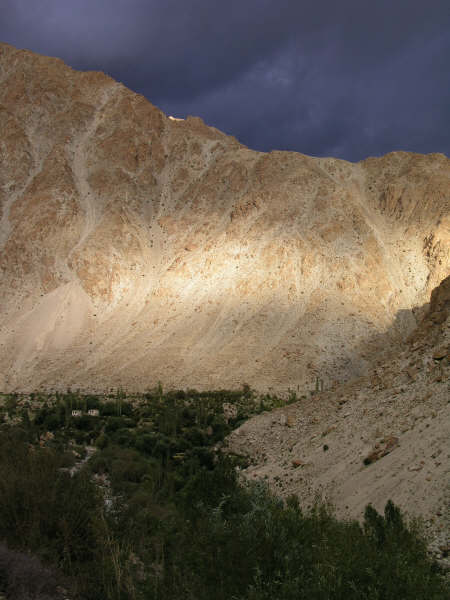
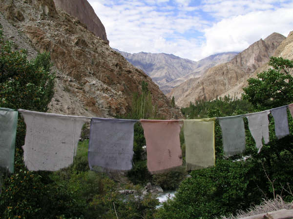
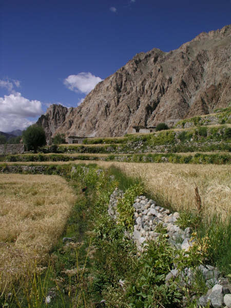
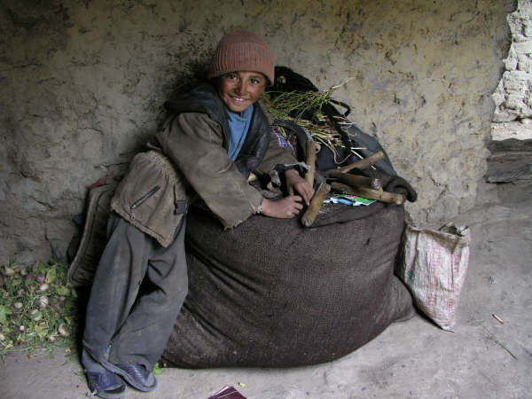

Gasping for breath III: The Domkhar Tea Experience
Domkhar, Ladakh, India
Tea in these parts is a complicated business and rather different from what we're used to. Firstly the tea itself - Solja Kante - is tea, butter and salt churned together into which, if the fancy takes you, you can mix a couple of spoonfuls of tsampa (roasted barley flour) making it something more akin to soup than a cuppa! Then comes the tea ritual itself. When the tea gets poured out you don't start drinking until the host is there with the flask ready to pour another cup - you then take a sip and it'll be refilled immediately. The problem with this is that when you've had enough it is VERY VERY difficult to convince your host that you've had enough and so the cycle goes on. This is the experience we had in every home we visited on our last trek to Dha and Domkhar.
The Dha - Domkhar trek came about because the originally planned trek to Stok La had to be cancelled due to the floods. We did have the option of going anyway, but the first day would have involved five water crossings and neither of us fancied any more hairy water crossings.
First stop on our trek was a village called Dha - just about as far as you can get before you hit the Pakistan border. The reason for our interest in this tiny village, such a long drive away from Leh, was because of the people who live there. The Brokpas are of Aryan descent and the only Aryan people in these parts who still practice Buddhism (most having been converted to Islam) - albeit a form of Buddhism mixed in with an older religion called Bon which involves ancestor worship. They look very different from the Ladakhi people, speak a different language and dress differently- every hat is adorned with plastic red flowers and colourful ribbons. Another reason for coming was an interest in their local wine as it is low enough and warm enough here to grow grapes. Sadly, we didn't get to try any, but we were told about the old couple who make it who are black with dirt because they haven't washed in years (an ancient Brokpa tradition!) and who store the wine in their chicken shed. The bottles are apparently plastered with chicken manure - perhaps connisseurs should add this to their list of wine descriptions - 'Velvety finish with an aroma of chicken poo.'
The rest of our time was spent in the village of Domkhar which is, in fact, four villages rolled into one. Each village is higher than the previous and the people live very differently. As you go higher the landscape changes markedly - at the first village (Domkhar Do) there are tomatoes, apricot trees in abundance and all the veg you would need to survive whereas, by the time you get to Kuramrik there are hardly any trees and the only thing they can grow is barley (which they can make the local brew, chang, out of - keeping them warm on those -35 C Winter evenings).
Domkhar isn't really on the tourist trail - we only ended up here because Namgial is from Domkhar and all of the guides and helpers we have had so far have been from here. This means that people are still pretty curious and also still incredibly hospitable to foreigners and so we got invited into more homes than we could drink butter tea. Hopefully we'll be able to take up a few more of those invitations when we return again....
The Dha - Domkhar trek came about because the originally planned trek to Stok La had to be cancelled due to the floods. We did have the option of going anyway, but the first day would have involved five water crossings and neither of us fancied any more hairy water crossings.
First stop on our trek was a village called Dha - just about as far as you can get before you hit the Pakistan border. The reason for our interest in this tiny village, such a long drive away from Leh, was because of the people who live there. The Brokpas are of Aryan descent and the only Aryan people in these parts who still practice Buddhism (most having been converted to Islam) - albeit a form of Buddhism mixed in with an older religion called Bon which involves ancestor worship. They look very different from the Ladakhi people, speak a different language and dress differently- every hat is adorned with plastic red flowers and colourful ribbons. Another reason for coming was an interest in their local wine as it is low enough and warm enough here to grow grapes. Sadly, we didn't get to try any, but we were told about the old couple who make it who are black with dirt because they haven't washed in years (an ancient Brokpa tradition!) and who store the wine in their chicken shed. The bottles are apparently plastered with chicken manure - perhaps connisseurs should add this to their list of wine descriptions - 'Velvety finish with an aroma of chicken poo.'
The rest of our time was spent in the village of Domkhar which is, in fact, four villages rolled into one. Each village is higher than the previous and the people live very differently. As you go higher the landscape changes markedly - at the first village (Domkhar Do) there are tomatoes, apricot trees in abundance and all the veg you would need to survive whereas, by the time you get to Kuramrik there are hardly any trees and the only thing they can grow is barley (which they can make the local brew, chang, out of - keeping them warm on those -35 C Winter evenings).
Domkhar isn't really on the tourist trail - we only ended up here because Namgial is from Domkhar and all of the guides and helpers we have had so far have been from here. This means that people are still pretty curious and also still incredibly hospitable to foreigners and so we got invited into more homes than we could drink butter tea. Hopefully we'll be able to take up a few more of those invitations when we return again....

Enroute to Dha as the glacial waters meet the Indus

More of the Indus!

Sue being dressed up in traditional Ladakhi clothes at Namgial's house in Domkhar Do

Apricots laid out to dry for the Winter in Dha

Domkhar Barma before a storm

The roof from Tashi's house

Tashi's mum and sister-in-law in their kitchen

Domkar Gongma

Domkhar Gongma

A little fella we met in the coldest village - Kurambik